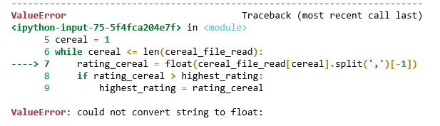

אפשר להמיר את מחרוזת עם מספר עשרוני למספר עשרוני ?
כי isnumeric , isdigit , isdecimal לא עובד
לייק 1
כל המתודות שתיארת בודקות האם מחרוזת מקיימת תנאי מסוים או לא (הרמז הוא זה שהן מתחילות ב-is). לא זו הדרך להמיר למספר עשרוני - דבר שהוא אכן אפשרי - ומאוד דומה להמרה למספר שלם
2 לייקים
היי, מצטרפת לתהייה,
כשעשיתי את זה קיבלתי תגובה ‘could not convert string to float’
יש משהו שאני מפספסת? 
תדפיסי את מה שאת מנסה להמיר לפני השורה שבה את מנסה להמיר ותראי מה את מפספסת 
מוסיף לאורפז: תדפיסי את מה שאת מנסה להמיר, ואת הטיפוס הנוכחי שלו. סתם ככה ליתר ביטחון
לי יש אותה בעיה למרות שטיפוס המשתנה הינו str. ניסיתי כל מיני דרכיםצ לא מבינה מה הבעיה
ValueError: could not convert string to float:
התכוונתי האם אפשר לבדוק האם מחרוזת היא מספר , כמו בפונקציות שהזכרתי לעיל, במידה והמחרוזת היא מספר עשרוני? @orpazf @Yam
לא למדנו על פונקציה מובנית שעושה את זה.
הייתי מציע לעשות מניפולציה על הstring עם replace ואז לבדוק באמצעות isdecimal.
איך replace תעזור פה? @aviadamar
זה אומר שאיפשהו פייתון לא מצליחה להמיר את המחרוזת למספר.
אם אתן מנסות לעשות את ההמרה הזו להרבה דברים יחד אז יהיה לכן קשה יותר למצוא באיזו מחרוזת בדיוק יש בעיה.
אולי אם תדפיסו כל שורה בנפרד יהיה לכן קל יותר למצוא איפה הבעיה.
לא מכירה אף מתודה שעושה זאת, אבל גם אם אכן אין - ניתן לממש פונקציה שעושה זאת.
לצורך התרגיל לדעתי אין בכך צורך.
2 לייקים
רמז
print(number.replace('.','').isdecimal())
זה יחזיר כמובן True או False - אם לא תעשה השמה מן הסתם שזה לא יערוך את המחרוזת המקורית.
אז אתה יכול להשתמש בזה בתנאי, בהדפסה וכו. מה שכן זה לא יתן מענה אם יהיו סימונים למשל + או -
אבל זה לא המקרה פה.
מסכים עם אורפז בנוגע לצורך של זה בתרגיל. אבל יש כל כך הרבה דרכים אז
אם זו הדרך שלך זה בטח יעזור
2 לייקים
תודה רבה!
2 לייקים
תודה גם לך. הסתדר בהצלחה
לייק 1
היי, מצטער שאני מחזיר את זה. אני כבר שעתיים על העניין הזה של הודעת השגיאה שלא מצליח להמיר str ל-float.
אסור לכתוב פה את הקוד אז אני מתקשה להבין גם איך לבקש את העזרה.
הדפסתי בחלון אחר את השורה שאני מנסה להפוך ל-float ולא הייתה לי שום בעיה עם זה.
רק כשאני מנסה לעשות השמה למשתנה חדש יש הודעת שגיאה
תוכל לצלם את השגיאה?
לא היתה בעיה להדפיס, או לא היתה בעיה להמיר במקום אחר?
כתבת “השורה” : “שורה” לא נשמע לי כמו משהו שניתן להמיר, אלא אם כן זה לא בדיוק מה שהתכוונת
אם זאת ההודעה שמתקבלת, אז ניסיון ההמרה נכשל על משהו שאינו מספר - שני מקורות לטעות שאני יכולה לחשוב עליהם:
- אתה חושב שאתה ממיר מספר מסוים (תא מסוים) אבל בעצם קורא למשהו אחר (זאת בעיה שהיתה צריכה להתברר מתוך ההדפסה)
- איכשהוא נדבקו לך תווים שאינם שייכים למספר בהמרה - רווחים או משהו כזה, שאולי קשה לזהות בהדפסה
לייק 1

תפריד להרבה שורות במקום לבצע את כל הפעולות האלו במקום אחד.
זה יעזור לך להבין איפה הבעיה